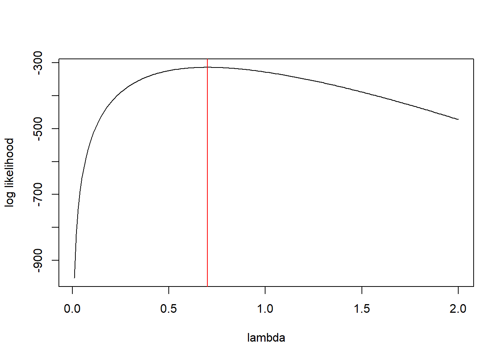
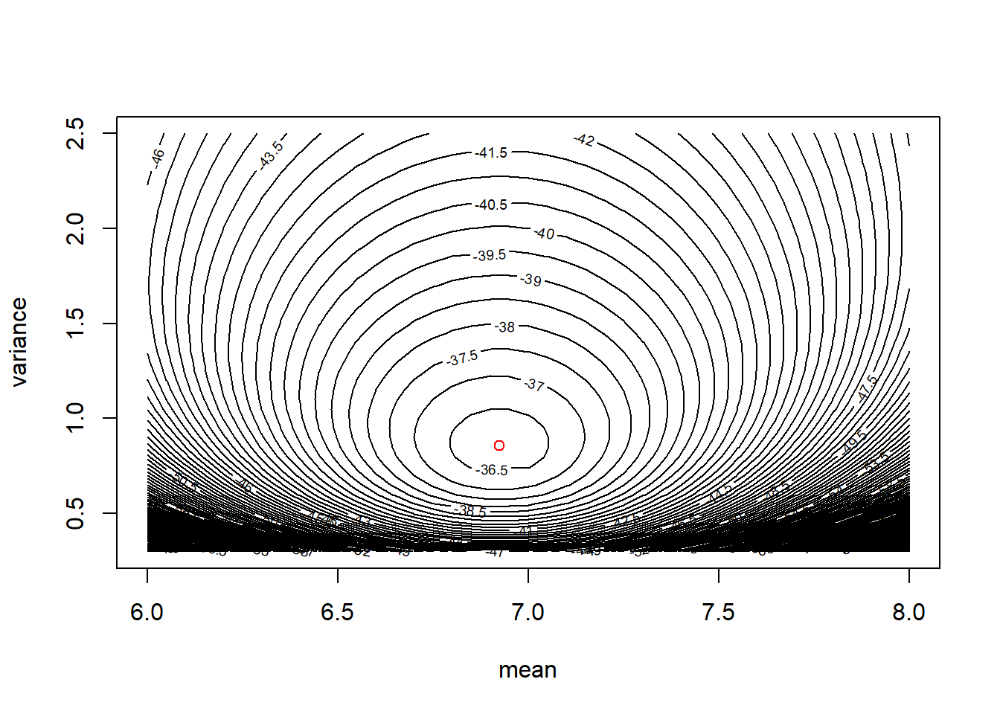

Computing companion for BMA / ST 590, Fall 2021
2021-08-16
Chapter 1 Introduction to likelihood
1.1 A very simple example with a single observation
Suppose we observe a single observation from a Poisson distribution. Suppose that observation is \(X=2\). We can use the dpois function to evaluate the likelihood for this single observation. For example, we can evaluate the likelihood at \(\lambda = 1.5\):
dpois(x = 2, lambda = 1.5)## [1] 0.2510214Or we could evaluate the likelihood at \(\lambda = 2\) or \(\lambda = 2.5\):
dpois(x = 2, lambda = c(2, 2.5))## [1] 0.2706706 0.2565156Now let’s evaluate the likelihood at a sequence of \(\lambda\) values:
lambda.vals <- seq(from = 0, to = 5, by = 0.01)
my.lhood <- dpois(x = 2, lambda = lambda.vals)
plot(lambda.vals, my.lhood, xlab = expression(lambda), ylab = "Likelihood", type = "l")We might guess that the likelihood is maximized at \(\lambda = 2\). We’d be right.
plot(lambda.vals, my.lhood, xlab = expression(lambda), ylab = "Likelihood", type = "l")
abline(v = 2, col = "red")1.2 Horse-kick data
Most real data sets contain more than a single observation. Here is a data set that we can use to illustrate maximum likelihood estimation with a single parameter. Famously, Ladislaus van Bortkewitsch (1868 - 1931) piblished how many members of the Prussiam army were killed by horse kicks in each of 20 years, for each of 14 army corps. As a caveat, these data are often used to illustrate the Poisson distribution, as we will use them. They match the Poisson distribution more neatly than we might expect for most data sets.
First import the data. Note that the path name used here is specific to the file directory that was used to create this file. The path name that you use will likely differ.
horse <- read.table("data/horse.txt", header = TRUE)Ask for a summary of the data to make sure the data have been imported correctly.
summary(horse)## year corps deaths
## Min. :1875 Length:280 Min. :0.0
## 1st Qu.:1880 Class :character 1st Qu.:0.0
## Median :1884 Mode :character Median :0.0
## Mean :1884 Mean :0.7
## 3rd Qu.:1889 3rd Qu.:1.0
## Max. :1894 Max. :4.0We can also learn about the data by asking to see the first few records using the head command
head(horse)## year corps deaths
## 1 1875 GC 0
## 2 1876 GC 2
## 3 1877 GC 2
## 4 1878 GC 1
## 5 1879 GC 0
## 6 1880 GC 0or we can see the last few records using the tail command:
tail(horse)## year corps deaths
## 275 1889 C15 2
## 276 1890 C15 2
## 277 1891 C15 0
## 278 1892 C15 0
## 279 1893 C15 0
## 280 1894 C15 0Another useful function to keep in mind is the `str’ function which tells you about the [str]ucture of an R object:
str(horse)## 'data.frame': 280 obs. of 3 variables:
## $ year : int 1875 1876 1877 1878 1879 1880 1881 1882 1883 1884 ...
## $ corps : chr "GC" "GC" "GC" "GC" ...
## $ deaths: int 0 2 2 1 0 0 1 1 0 3 ...Let’s plot a histogram of the values:
hist(horse$deaths,
breaks = seq(from = min(horse$deaths) - 0.5,
to = max(horse$deaths) + 0.5,
by = 1))
1.2.1 Calculate and plot the log-likelihood function
Create a function that calculates the log-likelihood for a value of \(\lambda\):
horse.ll <- function(lam){
ll.vals <- dpois(x = horse$deaths, lambda = lam, log = TRUE)
ll <- sum(ll.vals)
return(ll)
}We can use this function to calculate the log-likelihood for any value of \(\lambda\), such as \(\lambda = 1\):
horse.ll(1)## [1] -328.2462Let’s calculate the log-likelihood for many values of \(\lambda\), in preparation for making a plot. We’ll use a loop here, and not worry about vectorization.
# create a vector of lambda values using the 'seq'uence command
lambda.vals <- seq(from = 0.01, to = 2.0, by = 0.01)
# create an empty vector to store the values of the log-likelihood
ll.vals <- double(length = length(lambda.vals))
# use a loop to find the log-likelihood for each value in lambda.vals
for (i.lambda in 1:length(lambda.vals)) {
ll.vals[i.lambda] <- horse.ll(lambda.vals[i.lambda])
}Now plot the log-likelihood values vs. the values of \(\lambda\):
plot(ll.vals ~ lambda.vals, xlab = "lambda", ylab = "log likelihood", type = "l")
abline(v = 0.7, col = "red")
1.2.2 Find the MLE numerically using ‘optimize’
Bolker’s book illustrates numerical optimization using the optim function. The R documentation recommends using optimize for one-dimensional optimization, and optim for optimizing a function in several dimensions. So, we will use optimize here. We will enclose the entire call to optimize in parentheses so that the output is dumped to the command line in addition to being stored as horse.mle.
(horse.mle <- optimize(f = horse.ll, interval = c(0.1, 2), maximum = TRUE))## $maximum
## [1] 0.7000088
##
## $objective
## [1] -314.1545The optimize function returns a ‘list.’ A list is an R object that contains components of different types. The numerically calculated MLE is \(\hat{lambda} \approx 0.7\). The ‘objective’ component of gives the value of the log-likelihood at that point.
1.3 Myxomatosis data
The myxomatosis data are in Bolker’s library emdbook. First load the library. If the library is not found, you will first have to download and install the library on your computer, using the Packages tab in RStudio. The call to data loads the particular myxomatosis data set that we want into memory.
library(emdbook)
data(MyxoTiter_sum)Inspect the data to make sure they have been imported correctly.
summary(MyxoTiter_sum)## grade day titer
## Min. :1.000 Min. : 2.000 Min. :1.958
## 1st Qu.:3.000 1st Qu.: 4.000 1st Qu.:5.400
## Median :4.000 Median : 8.000 Median :6.612
## Mean :3.604 Mean : 9.564 Mean :6.331
## 3rd Qu.:5.000 3rd Qu.:13.000 3rd Qu.:7.489
## Max. :5.000 Max. :28.000 Max. :9.021head(MyxoTiter_sum)## grade day titer
## 1 1 2 5.207
## 2 1 2 5.734
## 3 1 2 6.613
## 4 1 3 5.997
## 5 1 3 6.612
## 6 1 3 6.810Extract the subset of the data that corresponds to the ``grade 1’’ viral strain.
myxo <- subset(MyxoTiter_sum, grade == 1)
summary(myxo)## grade day titer
## Min. :1 Min. :2.000 Min. :4.196
## 1st Qu.:1 1st Qu.:3.500 1st Qu.:6.556
## Median :1 Median :5.000 Median :7.112
## Mean :1 Mean :5.037 Mean :6.924
## 3rd Qu.:1 3rd Qu.:6.000 3rd Qu.:7.543
## Max. :1 Max. :9.000 Max. :8.499Out of curiosity, let’s make a scatterplot of the titer vs. the day
with(myxo, plot(titer ~ day)) For the sake of this example, we will ignore the apparent (and unsurprising) relationship between titer and day, and instead will consider only the titer data. We will regard these data as a random sample from a normal distribution. For the sake of illustration, we will estimate the mean and variance of the normal distribution using the
For the sake of this example, we will ignore the apparent (and unsurprising) relationship between titer and day, and instead will consider only the titer data. We will regard these data as a random sample from a normal distribution. For the sake of illustration, we will estimate the mean and variance of the normal distribution using the optim function in R.
First, we write a function to calculate the log likelihood.
myxo.ll <- function(m, v){
ll.vals <- dnorm(myxo$titer, mean = m, sd = sqrt(v), log = TRUE)
ll <- sum(ll.vals)
return(ll)
}Note that R’s function for the pdf of a normal distribution — dnorm — is parameterized by the mean and standard deviation (SD) of the normal distribution. Although it would be just as easy to find the MLE of the standard deviation \(\sigma\), for the sake of illustration, we will seek the MLE of the variance, \(\sigma^2\).
We can use our function to calculate the likelihood for any choice of mean and variance. For example, let’s try \(\mu = 6\) and \(\sigma^2 = 1\).
myxo.ll(m = 6, v = 1)## [1] -47.91229We want to maximize the likelihood using optim. Unfortuantely, optim is a little finicky. To use optim, we have to re-write our function myxo.ll so that the parameters to be estimated are passed to the function as a single vector. Also, by default, optim performs minimization instead of maximization. We can change this behavior when we call optim. Alternatively, we can just re-define the function to return the negative log likelihood.
myxo.neg.ll <- function(pars){
m <- pars[1]
v <- pars[2]
ll.vals <- dnorm(myxo$titer, mean = m, sd = sqrt(v), log = TRUE)
ll <- sum(ll.vals)
return(-ll)
}Now we can use optim:
(myxo.mle <- optim(par = c(7, 1), # starting values, just a ballpark guess
fn = myxo.neg.ll))## $par
## [1] 6.9241029 0.8571471
##
## $value
## [1] 36.23228
##
## $counts
## function gradient
## 55 NA
##
## $convergence
## [1] 0
##
## $message
## NULLNote that the MLE of the variance is \[ \hat{\sigma}^2 = \frac{\sum_i (x_i - \bar{x})}{n}. \] Let’s verify this by calculating the same quantity at the command line:
residuals <- with(myxo, titer - mean(titer))
ss <- sum(residuals^2)
n <- length(myxo$titer)
var.mle <- ss / n
var.mle## [1] 0.8572684Compare this to the answer given by optim, and to the more usual calculation of
var.usual <- ss / (n - 1)
var.usual## [1] 0.8902403var(myxo$titer)## [1] 0.8902403Make a contour plot of the likelihood surface.
m.vals <- seq(from = 6, to = 8, by = 0.05)
v.vals <- seq(from = 0.3, to = 2.5, by = 0.05)
ll.vals <- matrix(nrow = length(m.vals), ncol = length(v.vals))
for (i.m in 1:length(m.vals)) {
for(i.v in 1:length(v.vals)) {
ll.vals[i.m, i.v] <- myxo.ll(m = m.vals[i.m], v = v.vals[i.v])
}
}
contour(x = m.vals, y = v.vals, z = ll.vals, nlevels = 100,
xlab = "mean", ylab = "variance")
# show the MLE
points(x = myxo.mle$par[1], y = myxo.mle$par[2], col = "red")